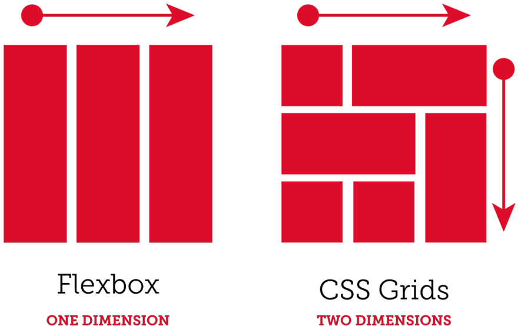

CSS Grid Layout
(aka “Grid” or “CSS Grid”)
CSS Grid is a two-dimensional grid-based layout system that, compared to any web layout system of the past, completely changes the way we design user interfaces.
Grid Container
The element on which display: grid is applied. It’s the direct parent of all the grid items. In this example container is the grid container.
Grid Item
The children (i.e. direct descendants) of the grid container. Here the item elements are grid items.
Grid Line
The dividing lines that make up the structure of the grid. Here the yellow line is an example of a column grid line.

Grid Cell
The space between two adjacent row and two adjacent column grid lines. It’s a single “unit” of the grid.

Grid Track
The space between two adjacent grid lines. Here’s the grid track between the second and third-row grid lines.

Grid Area
The total space surrounded by four grid lines. A grid area may be composed of any number of grid cells.

Fixed and flexible track sizes
We can create a grid with fixed track sizes – using pixels. We can also create a grid using flexible sizes with percentages or with the "fr" unit designed for this purpose. The new fr unit represents a fraction of the available space in the grid container.
HTML
CSS
repeat() notation
Large grids with many tracks can use the repeat() notation, to repeat all or a section of the track listing.
Positioning items against lines
When placing an item, we target the line – rather than the track. Working from left to right, the first item is placed against column line 1, and spans to column line 4, which in our case is the far-right line on the grid. It begins at row line 1 and ends at row line 3, therefore spanning two row tracks.
CSS
HTML
Gutters
Gutters between grid cells can be created using the column-gap and row-gap properties, or the shorthand gap. In the below example, I am creating a 10-pixel gap between columns and a "1em" gap between rows.
justify-content and align-content
Sometimes the total size of your grid might be less than the size of its grid container. This property aligns the grid along the row axis (as opposed to align-content which aligns the grid along the column axis).
Grid template areas
When you use CSS grid layout, you always have lines, and this can be a straightforward way to place items on your grid. However, there is an alternate method to use for positioning items on the grid which you can use alone or in combination with line-based placement.
The grid-area property
This is the property that can take as a value all four of the lines used to position a grid area. What we are doing here when defining all four lines, is defining the area by specifying the lines that enclose that area. We can also define an area by giving it a name and then specify the location of that area in the value of the grid-template-areas property.
CSS
HTML
Leaving a grid cell empty
You can leave grid cells empty with this method of layout. To leave a cell empty use the full stop character ".".
Spanning multiple cells
You can however span rows just as easily as columns. For example we could make our sidebar span down to the end of the footer by replacing the "." with "sd". The value of grid-template-areas must show a complete grid, otherwise it is invalid (and the property is ignored).
Redefining the grid using media queries
As our layout is now contained in one part of the CSS, this makes it very easy to make changes at different breakpoints. You can do this by redefining the grid, the position of items on the grid, or both at once.